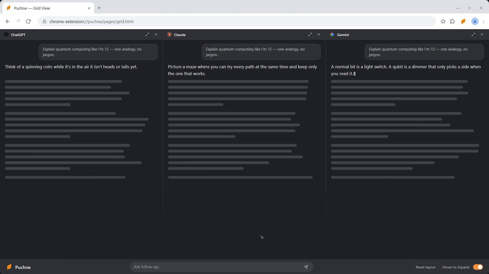
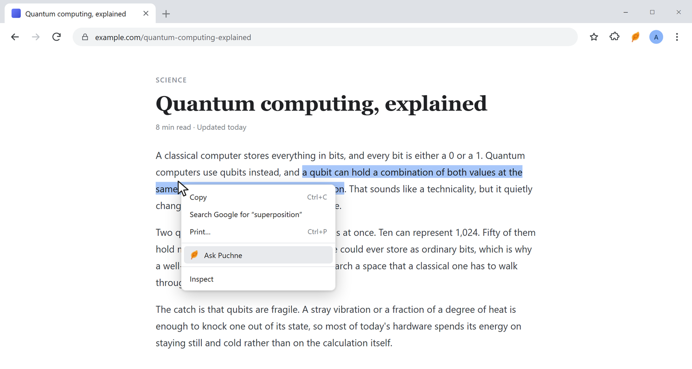

Features
Everything Puchne does
One prompt goes to every AI you've switched on.
Multicast prompting
Type once. Every tool you've switched on answers.

Grid view
One tab. One column per tool. All answering at once.
Hover a column to try it

New tabs mode
Real tabs instead — filed into one Chrome tab group.
Same prompt, same typing, same submit — just real tabs. Switch in Settings → Behavior.
Follow-up bar
Your next question, to everything already open.
Ask from any page
Select text → Ctrl+Shift+S, or right-click.
Show prompt
Add an instruction before it goes.
Send directly
Straight out, no confirmation.

Three places to type
Custom AI tools
Mistral, Qwen, Kimi, a self-hosted UI — anything with a text box.
URL
The chat page.
Selector
Its input box.
Test
One click, before saving.
The same editor re-points a built-in tool when a site redesigns — no waiting for a release. Walkthrough →

Auto-submit or pre-fill
On
Puchne presses Enter for you.
Off
Text waits in the box — tweak per tool.
It handles the annoying parts
Recent prompts
Your last prompts, one click to reuse.
One site at a time
Puchne installs with access to no websites at all.
Install
Zero sites.
Switch one on
Chrome asks for that site.
Withdraw
Any row, any time.
Theme & accessibility
Grid vs. tabs
| Grid | Tabs | |
|---|---|---|
| Answers land in | One tab, columns | One tab per tool |
| Side by side | Yes | No |
| Tab strip | One tab | One group |
| Hover to expand | Yes | — |
| Sites that block framing | May not render | Always works |
| Best for | Comparing | Long sessions |